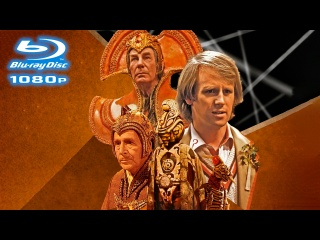
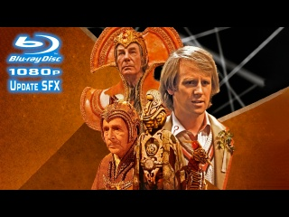
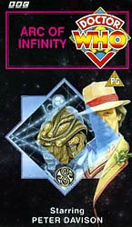
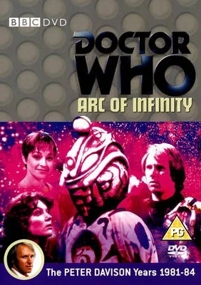
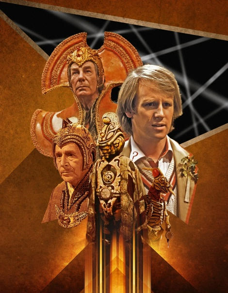
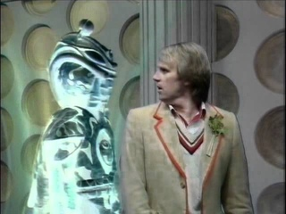

помощница
Субтитры: Русские и Английские |  |
|---|---|
с обновленными спецэффектами Субтитры: Русские и Английские |  |
с обновлением визуальных эффектов (cunningmunki) Субтитры: отсутствуют | над серией] |
Arc of Infinity
Дата выхода: 3-12 января 1983
Формат: 4 эпизода по 25 мин.
| помощница |
Некто крадёт биоданные Доктора из архивов Галлифрея и передаёт их существу из вселенной антиматерии. Высший совет Повелителей Времени под председательством Борусы принимает решение: чтобы остановить вторжение — казнить Доктора. Тем временем в Амстердаме Тиган разыскивает пропавшего кузена и натыкается на нечто в заброшенном особняке Франкендал. Омега, один из основателей цивилизации Повелителей Времени, возвращается — впервые со времён «Трёх Докторов». Съёмки в Амстердаме стали вторым случаем выезда классического сериала за границу после «Города смерти» в Париже. Колин Бейкер сыграл командора Максила — а через год стал Шестым Доктором, первым случаем в истории, когда будущий Доктор сначала появился в другой роли. Майкл Гоф, сыгравший советника Хедина, до этого был Небесным Игрушечником. А в сценарий изначально была вписана Леела — воительница из племени севатимов, но актриса Луиза Джеймсон была недоступна, и часть её действий отдали Ниссе.
 VHS - март 1994 |   DVD+Boxset - 6 августа 2007 |  Blu-ray - 18 сентября 2023 * Версия в нашей группе |
|---|

